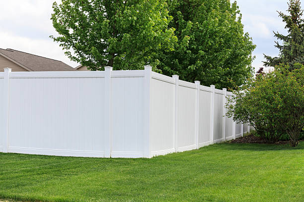

Looking for affordable fence services in Morganfield Kentucky ? Our team offers exceptional installations and repairs tailored to your needs. Experience quality fencing that boosts security and enhances your property's value!
Click Here To Call Us (877) 848-1711When it comes to reliable and high-quality fencing services in Morganfield Kentucky our company stands out as the trusted choice for residential and commercial properties. Whether you need a sturdy privacy fence, a secure chain-link fence, or an elegant ornamental design, we specialize in installing and repairing fences to enhance the safety, privacy, and aesthetics of your property.
Our team of experienced professionals uses only top-grade materials and cutting-edge techniques to deliver fences that are built to last. We offer a wide range of fencing options, including wood, vinyl, aluminum, and steel, tailored to meet your specific needs and style preferences. Each project begins with a detailed consultation to ensure your vision becomes a reality, no matter the size or complexity.
Choosing us means you’re selecting a company dedicated to excellence, timely service, and customer satisfaction. We understand that fences play a critical role in protecting your property and boosting its curb appeal. That’s why we prioritize durability, precision, and a flawless finish.
If you’re searching for expert fence installation or repair services in Morganfield Kentucky look no further. Contact us today for a free quote and discover why we’re the go-to fencing company in Morganfield Kentucky . Let us help you secure and beautify your property with a fence you can depend on.
Residential & commercial Fences
Quality services at affordable prices
Immediate 24/ 7 emergency services


Looking for top-quality fence installation services in Morganfield Kentucky ? Our expert team is here to help you transform your property with durable, stylish, and secure fencing solutions. Whether you need a wooden privacy fence, a sleek vinyl option, or a sturdy chain-link barrier, we specialize in installing fences that meet your specific needs and enhance the beauty of your property.
With years of experience, we pride ourselves on delivering professional and reliable services. We use premium materials that ensure long-lasting durability and withstand harsh weather conditions. From residential fencing to commercial and industrial installations, our skilled professionals provide customized designs and precise craftsmanship to fit your requirements.
Why choose us for your fence installation in Morganfield Kentucky ? We offer competitive pricing, timely project completion, and exceptional customer service. Our experts guide you through every step, from selecting the right fence style to final installation, ensuring a hassle-free experience.
A professionally installed fence not only improves your property's aesthetics but also adds privacy, security, and value. Whether you want to keep pets safe, protect your family, or enhance your business premises, our fences are built to perform.
Contact us today for the best fence installation services in Morganfield Kentucky . Let us bring your fencing vision to life!
Residential & commercial Fences
Quality services at affordable prices
Immediate 24/ 7 emergency services
For enhanced security that provides an additional layer of deterrence, electric fencing is an ideal solution for both residential and commercial properties. At Fences, we specialize in electric fencing installation delivering advanced security measures tailored to meet your specific needs.
Electric fences function as a powerful deterrent to trespassers by delivering a safe, non-lethal shock. This robust preventive measure is often complemented by traditional fencing solutions to create a comprehensive security perimeter. Our electric fencing options are designed with safety and efficiency in mind, utilizing technology that meets industry standards for security.
Our experienced technicians conduct thorough assessments of your property to determine the most effective locations for electric fencing installation. We adhere strictly to local codes and regulations, ensuring compliance and safe operation of your electric fencing system.
What sets Fences apart is our commitment to superior service and customer satisfaction. We aim to provide tailored security solutions that align with your specific requirements and deliver peace of mind. Our transparent pricing means there are no hidden costs, allowing for straightforward budgeting.
Invest in your property’s security with cutting-edge electric fencing installation from Fences. Let us help you protect what matters most with reliable and effective fencing solutions.

Bamboo fencing is an eco-friendly and visually appealing option that resonates well with nature lovers . Known for its strength and durability, bamboo provides a natural look while offering privacy and security. Our bamboo fence installation services deliver customized solutions that meet your aesthetic preferences and functional needs. We guide you through the selection process and ensure professional installation, enhancing your garden, patio, or residential space with a beautiful, sustainable product. Choose us for an expertise that blends functionality with eco-friendly aesthetics.

Wrought iron fencing is a classic choice, offering both elegance and security. Over time, however, wrought iron can suffer from rust, damage, and wear, making restoration essential. At Fences, we specialize in wrought iron fence restoration and installation bringing beauty and strength back to your fencing.
Our wrought iron fencing options come in various designs, providing the right blend of security and aesthetic appeal. When restoring wrought iron fences, we carefully assess the damage, performing tasks such as rust removal, repainting, and structural repairs to ensure your fence looks its best and remains structurally sound.
Expert installation is critical for wrought iron fences, and our seasoned professionals utilize best practices to guarantee a beautiful and durable result. With a keen eye for detail and a commitment to quality, we ensure that your new or restored wrought iron fence enhances your property.
What differentiates Fences is our exceptional customer service and craftsmanship. We value open communication, allowing us to understand your specific needs and deliver a final product that aligns with your vision. Our transparent pricing means you’ll never have any surprises when it comes to cost.
Trust Fences for all your wrought iron fence restoration and installation needs in Morganfield Kentucky . Whether you’re looking to restore a loved heirloom or install a new fence that combines beauty and security, we are here to help.

No two properties are alike, and at Fences, we understand that your fencing needs are unique. Our custom fence design and build services allow you to create a fencing solution that perfectly matches your property’s style, security requirements, and functional needs. From classic designs to modern aesthetics, our team works with you to bring your vision to life.
We start with a comprehensive consultation, discussing your ideas, preferences, and any specific challenges presented by your site. Our skilled designers then create custom plans that reflect your vision while adhering to local regulations. Expert installation follows, ensuring your fence is not just a border but a stunning enhancement to your property. Trust Fences for custom fence solutions that truly stand out.

Keeping your livestock safe and secure is a top priority for any farm or ranch owner. At Fences, we specialize in horse and livestock fencing solutions designed to protect your animals and your investment.
Our fencing options include various materials and styles, such as wooden, wire, and composite fencing, tailored to suit the specific requirements of your livestock. We understand the need for durable and reliable fencing that withstands the rigors of a farm environment.
Our experienced team works closely with you to determine the best fencing solution to meet your safety needs while aligning with your property's aesthetics. We pride ourselves on our reputation for quality workmanship and customer satisfaction.
Choose Fences for all your horse and livestock fencing needs in Morganfield Kentucky . Join others who have trusted us to provide effective and safe solutions for their properties. Your farm animals deserve the best protection available.
Enhancing the beauty of your garden and landscape is essential for creating an inviting outdoor space. Garden and landscape fencing provides not only a boundary but also an aesthetic element that complements your outdoor decor. At Fences, we specialize in garden and landscape fencing installation delivering tailored solutions that enhance your property’s charm and functionality.
Our garden fencing options come in various materials and styles, including picket, lattice, and vinyl options. We work closely with you to design a fence that matches your vision while providing the right level of protection for your plants and landscaping. Whether you need a low fence to define your garden or a taller one for added security, we have solutions to suit your preferences.
Quality installation is crucial for the longevity of your garden fencing, and our experienced team is dedicated to delivering exceptional results. Using high-quality materials and industry best practices, we ensure your fence stands strong against the elements while enhancing the beauty of your landscape.
What sets Fences apart is our commitment to customer satisfaction and attention to detail. We believe that every garden deserves a beautiful fence, and we take pride in our ability to bring your vision to life. Our transparent pricing model ensures you know what to expect, allowing for easy budgeting.
Enhance your outdoor space with custom garden and landscape fencing solutions from Fences. Transform your property with beautiful, functional fencing that reflects your unique style.

Living in a noisy environment can be a challenge, and having a noise reduction fence can help create a more tranquil outdoor space. At Fences, we provide specialized noise reduction fencing solutions designed to shield your property from external sounds.
Our noise-reducing fences are crafted using materials optimized for sound attenuation, ensuring they effectively buffer noise from roads, neighbors, or other disturbances. We understand the importance of a peaceful living environment, and our team is dedicated to providing solutions that enhance your quality of life.
We work with you to design a fence that not only reduces noise but also complements your property’s aesthetic. Our professional installation ensures your noise reduction fence serves its purpose effectively, providing relief from unwanted sounds.
Choose Fences for noise reduction fencing . Join countless happy residents who have transformed their homes into peaceful retreats with our innovative fencing solutions. Let us help you regain your serenity.

For an upscale appearance combined with strength and security, ornamental steel fencing is an ideal choice. Our ornamental steel fencing services elevate your property’s aesthetics while providing a sturdy barrier. Available in a variety of intricate designs, ornamental steel fences can enhance the beauty of gardens, yards, or commercial properties. Our professional team ensures proper installation and working with your vision to create a bespoke solution that fits your architectural style. Choose us for our focus on quality and customer service that brings your fencing vision to life.

For maximum security and durability, stone and concrete fencing present the perfect solution for property owners . These robust materials are well-suited for both residential and commercial properties, providing a solid barrier against noise and unwanted intrusion. Our stone and concrete fencing services involve expert installation and design that considers aesthetics and functionality. With a commitment to using high-quality materials, we ensure your fencing will withstand the elements and provide long-lasting security. Trust us to deliver impressive results that enhance the integrity and safety of your property.
Years Experience
Expert Technicians
Satisfied Clients
Compleate Projects
When it comes to securing your property, enhancing privacy, or adding curb appeal, Superior Fence stands out as the trusted choice across all cities in Morganfield Kentucky . With years of experience in the fencing industry, we are committed to providing durable, aesthetically pleasing, and reliable fences tailored to your specific needs.
Our team at Superior Fence takes pride in offering a wide range of fence styles, including wood, vinyl, chain link, and ornamental metal, ensuring that you find the perfect fit for your property. We use only the highest-quality materials to guarantee the longevity and resilience of every installation. Whether you're looking for increased security, privacy, or simply to define your property boundaries, our custom solutions deliver lasting results.
What sets us apart from other fencing companies in Morganfield Kentucky is our dedication to exceptional customer service. From the initial consultation to the final installation, our team is with you every step of the way, providing expert advice and support. We ensure that every fence is installed with precision and care, meeting both your functional and aesthetic needs.
At Superior Fence, we value your time and investment. Our competitive pricing, timely installations, and focus on craftsmanship make us the go-to fencing contractor in Morganfield Kentucky . Choose us for your fencing project and experience the Superior difference – where quality meets reliability.
In today's world, ensuring your personal space is free from the prying eyes of neighbors and passersby is essential. A privacy fence installation is more than just a boundary; it's an investment in your peace of mind. At Fences, we specialize in designing and installing high-quality privacy fences that perfectly suit your property and lifestyle. Our team understands that privacy is paramount, and we work diligently to create secure, enclosed outdoor spaces where you can relax, entertain, and enjoy your surroundings.
We offer a variety of materials for your privacy fence, including wood, vinyl, and composite options, each with unique benefits. Our experts will help you choose the right style that complements your home while ensuring maximum privacy. We also focus on durable construction, using only the best materials that withstand the test of time, weather, and wear.
What sets us apart from other fencing companies in Morganfield Kentucky is our commitment to customer satisfaction. We take the time to understand your needs, collaborate on a design that works for you, and provide professional installation that adheres to local regulations. Our skilled team ensures that every fence we install not only looks great but stands strong against the elements.
Choosing us means choosing quality. We pride ourselves on our attention to detail and the beauty of our craftsmanship. Our fences not only enhance your property's aesthetic appeal but also add value to your home. With years of experience in privacy fence installation we have built a reputation for reliability, efficiency, and excellence.
Whether you're looking to block noise from a busy street or simply want to create a secluded outdoor retreat, our privacy fences are an ideal solution. Let's transform your outdoor space with a stunning privacy fence that offers protection, beauty, and peace of mind. Trust Fences for all your privacy fence installation needs—because your privacy matters.
Wood fences add charm and warmth to any property, but they can be vulnerable to the elements and wear over time. At Fences, we understand the unique challenges of wooden fences, and we are here to offer professional repair and installation services that restore and elevate the beauty of your outdoor spaces.
Our skilled team is dedicated to providing high-quality solutions that extend the life of your wooden fences. Whether it's replacing rotting boards, reinforcing leanings, or completely installing a new wooden fence, we have the expertise to get the job done right. We believe in using only the best materials to ensure that your new fence can withstand nature's tests while enhancing the visual appeal of your property.
When you choose us, you can expect transparent communications, timely service, and a commitment to customer satisfaction that sets us apart from the competition. Our fences are designed not just for visual appeal, but for durability and performance, ensuring they last for years to come.
With our wooden fencing solutions, you can enjoy a touch of natural beauty and enhance your property value. Let's work together to create a stunning wooden fence that complements your home’s style. Join other homeowners who have trusted us to bring their fencing vision to life.
Looking for a low-maintenance fencing solution that offers both durability and aesthetic appeal? Vinyl fencing is an outstanding option that not only enhances your property’s beauty but also promises longevity. At Fences, we specialize in vinyl fencing services that cater to both residential and commercial clients .
Vinyl fences come in various styles, colors, and designs, allowing you to customize the appearance to suit your property perfectly. Unlike wood, vinyl does not warp, splinter, or fade, making it an ideal choice for those seeking a long-lasting fence that requires minimal upkeep. Our experienced team will work with you to select the perfect vinyl fencing style to match your property’s aesthetics while providing the security and functionality you need.
One of the key benefits of choosing vinyl fencing is its low maintenance requirements. Forget about sanding, staining, or painting every few years. With a simple wash using soap and water, your vinyl fence will look as good as new. Our installation process ensures that your fence is not only stunning but also structurally sound, capable of withstanding harsh weather conditions.
What distinguishes Fences in the Morganfield Kentucky area is our unwavering focus on customer service. We take the time to understand your preferences, provide expert recommendations, and execute the installation with precision and care. Our goal is to ensure your complete satisfaction from start to finish.
When you choose us for your vinyl fencing project, you're investing in quality, longevity, and visual appeal. With years of experience in vinyl fencing, we have the knowledge and expertise to deliver outstanding results that enhance your property and meet your needs. Let us help you create the stunning outdoor space you’ve always envisioned—choose Fences for your vinyl fencing services .
For an economical and practical fencing solution, chain-link fences are a popular choice for both residential and commercial properties in Morganfield Kentucky . At Fences, we specialize in professional chain-link fence installation, offering robust security without compromising on visibility. Our chain-link fences are perfect for enclosing yards, securing business properties, and defining boundaries.
We use high-quality galvanized steel to ensure your fence is resilient and resistant to rust and corrosion. Understanding that each property has unique needs, we provide customizable options such as height, gauge, and coatings, allowing you to select the perfect fencing style for your requirements. Our installation process is thorough, ensuring that your fence is built according to industry standards while minimizing disruption to your property. Rely on Fences for your chain-link fencing needs and experience the quality and care that set us apart from the competition.
For those looking to combine security with elegance, decorative aluminum fencing is an ideal choice. At Fences, we offer premium aluminum fencing solutions designed to enhance the beauty of your property while providing the durability of traditional materials.
Our decorative aluminum fences come in a variety of styles and colors, allowing homeowners in Morganfield Kentucky to customize their outdoor spaces effortlessly. These fences are not only beautiful but also require minimal maintenance, making them a smart investment for any property owner.
Through our skilled installation services, we ensure that your fencing is secure and well-constructed, providing the peace of mind you deserve. Our knowledgeable team can guide you through the design and selection process, offering expert advice on how to best meet your fencing needs.
Choosing Fences means selecting a partner committed to your satisfaction. We understand the importance of first impressions, and the right decorative aluminum fence can elevate your property's curb appeal. Transform your outdoor spaces with us today.
The timeless charm of a picket fence brings warmth and personality to any home. Our picket fence installation services provide residents with a stylish way to define their properties while enhancing curb appeal. Available in various heights and styles, our picket fences can be made from wood or vinyl, allowing you to choose according to your taste and maintenance preferences. Each installation is carried out with precision and care, ensuring a sturdy and beautiful finish. Trust us to deliver a quality picket fence that reinforces your home's unique character while providing a welcoming atmosphere for your family and guests.
If you're looking to add rustic charm to your property while maintaining a clear boundary, our split rail fencing services are the perfect solution. At Fences, we specialize in the installation of split rail fences that provide both functionality and aesthetic value.
Split rail fencing is ideal for defining property lines and enclosures while allowing for unobstructed views of your landscape. Our fences are constructed from high-quality materials, ensuring longevity and resilience against the elements while complementing the natural beauty of your property.
Our experienced team will work closely with you to determine the best design and layout for your split rail fence, ensuring it meets both your practical needs and stylistic preferences. Choosing us means investing in quality workmanship and personalized service that makes your fencing project a smooth process from start to finish.
Whether you want to enhance your property’s appeal, contain livestock, or simply mark boundaries, we are here to help. Trust Fences to deliver exceptional split rail fencing solutions that your neighbors will envy.
Keeping your fence in top condition is essential for its longevity and appearance. At Fences, we offer professional fence staining and maintenance services designed to protect and enhance your investment. Regular maintenance not only preserves the aesthetic appeal of your fence but can also prevent costly repairs down the line.
Our comprehensive maintenance services include cleaning, staining, and repairing to keep your fence looking brand new. We offer a variety of stains and sealants that are UV resistant, protecting your wood from fading and weather damage. Our team has the experience and knowledge to recommend the best products for your specific fence type and environment, ensuring optimum results. When it comes to fence staining and maintenance Fences stands out for our exceptional service and commitment to quality.
Keeping your loved ones safe is a top priority, especially when it comes to pool areas. At Fences, we specialize in pool safety fence installation, creating secure barriers that protect children and pets from accidental drownings while complementing your outdoor space aesthetically. Our pool fences are designed to adhere to local safety regulations, ensuring peace of mind for your family.
We offer various materials and designs, from mesh fences that blend seamlessly into your backyard to decorative aluminum options that provide both safety and style. The installation process is straightforward; our professional team will ensure that your pool safety fence is secure, effectively keeping your pool area safe without sacrificing beauty. Choose Fences for your pool safety fence needs in Morganfield Kentucky and enjoy a safe, beautiful environment for your family and friends.
Keeping your beloved pets safe while allowing them the freedom to roam is a priority for many homeowners. Our pet containment fencing services specialize in creating secure environments for your pets. Whether you need a complete fence or a specialized containment system, we offer various options to suit different pet sizes and behaviors. Our fences are designed to be durable and sturdy while aesthetically pleasing to match your home. With our team’s expertise and personalized service, you can trust that your pets will be safe and secure within their designated areas. Choose us for our knowledge and passion for pet safety in fencing.
In today’s fast-paced world, protecting your business assets is a top priority. Our security fencing services provide robust solutions tailored for commercial properties. We understand the array of threats that businesses face, and we offer various fencing options designed to deter unauthorized access, including chain-link, barbed wire, and electrified fencing. Each security fence is crafted with the latest technology and materials to ensure durability and resilience. We work closely with you to design a security solution that meets your unique needs and fits within your budget. Choose us for our dedication to quality and security, ensuring your business remains protected.
Industrial settings require robust and reliable fencing solutions to protect assets and ensure safety. At Fences, we provide specialized industrial chain-link fence installation, tailored specifically for warehouses, manufacturing plants, and distribution centers.
Our chain-link fences are engineered for durability and strength, providing secure perimeters that hold up against harsh weather conditions and heavy traffic. We use high-quality materials and state-of-the-art techniques to ensure that your fence meets the specific demands of an industrial environment.
With our extensive experience in the field, we understand the unique requirements of industrial fencing and will work with you to deliver solutions that are both effective and compliant with industry standards. Our commitment to timely and professional service sets us apart, ensuring minimal disruption to your operations during installation.
When it comes to securing your industrial property in Morganfield Kentucky trust Fences to provide fencing solutions that protect your investments and keep your premises safe. Our reputation for reliability and excellence makes us the preferred choice for businesses in need of industrial fencing solutions.
Keeping construction sites secure and safe is essential for both workers and the public. Our temporary fencing services in Morganfield Kentucky offer effective and easily deployable solutions designed for construction and event management. Our fences are sturdy yet lightweight, making them easy to install and remove as needed. They provide clear boundaries, deter unauthorized access, and enhance safety on-site. With customizable options, we can cater to different project scales and durations, ensuring you get the perfect fit for your needs. Trust our team for efficient service and quality materials that ensure your construction site is well-protected.
For businesses seeking a balance between security and aesthetic appeal, commercial aluminum fencing is the ideal solution. It offers durability and elegance, making it suitable for various commercial applications, from retail spaces to office complexes. At Fences, we specialize in commercial aluminum fencing in Morganfield Kentucky providing top-quality solutions tailored to your specific needs.
Aluminum fencing is lightweight yet strong, making it an excellent choice for security without compromising visibility or style. Our commercial-grade aluminum fences are resistant to rust and corrosion, ensuring a long-lasting installation that requires minimal maintenance. Available in various heights, colors, and styles, we can customize your fencing to match the architecture of your business premises.
Our installation team is well-trained and experienced, ensuring that your commercial aluminum fence is installed correctly and efficiently. We adhere to all local regulations, guaranteeing that your fencing solution not only meets your security needs but also complies with necessary codes.
What sets Fences apart is our unwavering commitment to customer satisfaction and quality workmanship. We understand that each business has unique requirements, which is why we take a personalized approach to every project. Our transparent pricing model ensures you are informed every step of the way, with no hidden costs.
By choosing our commercial aluminum fencing services, you are making a long-term investment in the security and appeal of your property. Enjoy the perfect blend of functionality and elegance with our high-quality aluminum fencing solutions at Fences.
Securing your property is more than just erecting barriers; it’s about controlling who enters. Our access control and gate systems are designed to meet a variety of security needs, incorporating advanced technology such as keypads, remote controls, and biometric scans. We provide comprehensive installation services that ensure seamless integration with your existing fencing. Our solutions enhance your security while allowing you to maintain easy access for authorized personnel. Trust our experienced team to design and install a system that fits your security needs and budget, making us the go-to choice for access control solutions .
For external properties requiring heightened security, barbed wire fencing is often the best solution. Our barbed wire fence installation services in Morganfield Kentucky are designed to deter intruders and protect property lines effectively. Commonly used in agricultural settings and industrial sites, barbed wire fencing stands resilient against external threats. We prioritize a strong foundation and quality materials during installation to ensure reliability in protecting your assets. With extensive experience in the field, we guarantee professional service that adheres to safety standards. Choose us for durable, efficient, and proven barbed wire fencing solutions tailored to meet your needs.
In a bustling commercial environment, privacy is often a priority. At Fences, we specialize in commercial privacy fencing that securely delineates your business space while providing the discretion you need. Our privacy fences are tailored for business environments, allowing for effective separation from surrounding properties.
We use high-quality materials such as vinyl, wood, or composite to create durable structures that withstand wear and tear from everyday use. Our team works closely with you to ensure the fence meets your specific requirements, both functionally and aesthetically. For commercial privacy fencing trust Fences to deliver exceptional results and unparalleled service you can rely on.
Security is a significant concern for both residential and commercial properties, and an anti-climb fence is an effective solution for safeguarding your premises. At Fences, we specialize in anti-climb fence installation that acts as a robust security barrier while offering peace of mind.
Our anti-climb fences are designed with specific features that prevent unauthorized access, including pointed tops and closely spaced pickets. We assess your security needs carefully and provide a tailored approach that fits with your landscape and architectural style. With our professional installation team, you can trust that your anti-climb fence will not only deter intruders but also enhance the overall look of your property. Choose Fences for anti-climb fencing and protect what matters most to you.
The security of industrial facilities is paramount, and at Fences, we offer specialized perimeter fencing solutions designed to secure your operations efficiently. Our perimeter fencing options include chain-link, barbed wire, and solid privacy fencing, ensuring your facility is well protected against unauthorized access.
Our experienced team works diligently to assess your facility's unique vulnerabilities and provide tailored fencing solutions that meet your specific requirements. We understand the importance of a durable and compliant fence for your operations. When you choose Fences for your perimeter fencing needs in Morganfield Kentucky you are partnering with a team dedicated to your security and operational success.
For warehouse and storage unit facilities, security is paramount to protect valuable inventory and assets. Effective fencing solutions provide a barrier against theft and trespassing while ensuring clear access for authorized personnel. At Fences, we specialize in designing and installing fencing for warehouses and storage units delivering top-notch security solutions tailored to your needs.
Our fencing options include chain-link, solid panel, and barbed wire methods, providing varying degrees of security suitable for your specific environment. We collaborate with you to design a fencing solution that perfectly balances accessibility for your staff while keeping unauthorized individuals at bay.
The importance of proper installation cannot be overstated. Our experienced team adheres to all local regulations, ensuring that your fencing solution complies with industry standards while offering the strength and resilience necessary for your facility.
What sets Fences apart is our dedication to customer service and quality workmanship. We approach every project with a keen eye for detail, ensuring your needs are met and that the installation process is hassle-free. Our commitment to transparency means you will always know what to expect regarding pricing and timelines.
Ensure the security of your warehouse and storage units with the quality fencing solutions from Fences. Contact us today to discuss your fencing project, and let us help you create a safe, secure environment for your valuable assets.
As sustainability becomes increasingly important, more property owners are turning to eco-friendly fencing solutions that minimize environmental impact while providing the necessary functionality. At Fences, we offer a range of eco-friendly fencing options that combine aesthetic appeal with sustainable materials and practices.
Our eco-friendly fences are made from recycled or sustainably sourced materials, including bamboo, composite lumber, and reclaimed wood, which helps reduce your carbon footprint while still providing a beautiful and functional barrier. These materials not only support environmental conservation but also offer durability and low maintenance.
Choosing an eco-friendly fence does not mean sacrificing style. Our eco-friendly fencing solutions come in various designs and styles, ensuring that you can select an option that complements your property’s aesthetics while promoting sustainability.
Our installation team is dedicated to using environmentally-friendly practices throughout the installation process, ensuring that we minimize waste and leave your site clean and tidy. We also prioritize quality craftsmanship, ensuring that your eco-friendly fence is installed correctly and built to last.
What distinguishes Fences in Morganfield Kentucky is our commitment to customer satisfaction and sustainable practices. We believe that your fencing choices can positively impact the environment, and we are proud to offer solutions that are both beautiful and eco-conscious.
Invest in your property and the planet with eco-friendly fencing solutions from Fences. Contact us today to explore your options for sustainable fencing that enhances your outdoor space without harming the environment.
When it comes to protecting your property in Morganfield Kentucky choosing the right fencing materials is crucial. The unique climate in this region—characterized by its humidity, rainfall, and occasional extreme weather—demands durable, weather-resistant fencing solutions that stand the test of time. That’s why we provide high-quality fencing materials tailored specifically for the needs of Morganfield Kentucky homeowners and businesses.
Our selection includes materials like vinyl, aluminum, and pressure-treated wood, which are all known for their exceptional durability in humid conditions. Vinyl fences resist moisture and never warp or rot, making them an excellent choice for longevity. Aluminum fencing offers corrosion resistance and adds a modern touch to any property. Meanwhile, pressure-treated wood combines natural beauty with enhanced protection against pests and decay, perfect for those who prefer a classic aesthetic.
Whether you’re looking for privacy, security, or a decorative touch, our expert team ensures that you get the perfect fencing solution for your needs. We also offer professional guidance to help you choose materials that can withstand Morganfield Kentucky ’s weather while enhancing your property’s curb appeal.
With our commitment to quality and customer satisfaction, we’ve become the trusted choice for fencing materials in Morganfield Kentucky . Let us help you protect your investment with fences built to endure the elements and keep your property looking its best. Reach out today to explore our premium fencing options!
Morganfield is a home rule-class city in Union County, Kentucky, in the United States. It is the seat of its county. The population was 3,285 as of the year 2010 U.S. census.
The timeline for fence installation depends on the type and size of the project, but most installations are completed within 1-3 days.
Yes, we offer staining and painting services to enhance the appearance and durability of your fence .
Simply contact Superior Fence to schedule a consultation and begin your fencing project .
Maintenance varies by material. We provide guidance on cleaning, staining, and repairs to keep your fence in top shape .
Privacy fences offer seclusion, enhanced security, and noise reduction, making them an excellent choice for homes in Morganfield Kentucky .
Yes, Superior Fence provides free, no-obligation quotes for all fence installation projects .
Yes, we provide warranties on materials and workmanship for all fences installed in Morganfield Kentucky .
Yes, we design our fences with safety in mind to protect children in your Morganfield Kentucky property.
Yes, Superior Fence provides professional fence repair services in Morganfield Kentucky to restore the functionality and appearance of your fence.
Absolutely! We provide a variety of colors and finishes to ensure your fence complements your Morganfield Kentucky property.
Superior Fence is known for exceptional craftsmanship, high-quality materials, and outstanding customer service in Morganfield Kentucky .
Absolutely! Our fences are made with high-quality materials designed to withstand the climate and weather conditions .
Depending on local regulations, you may need a permit to install a fence in Morganfield Kentucky . We can help you navigate the permitting process.
We offer a range of fence heights to meet your privacy and security needs typically from 4 to 8 feet.
Popular styles include picket fences, privacy fences, and decorative aluminum fences.
Absolutely! Contact Superior Fence to schedule a convenient consultation for your fencing project .
Yes, Superior Fence offers fence installation services for both residential and commercial properties .
Yes, Superior Fence offers fence removal services as part of your installation project in Morganfield Kentucky .
Our experts will help you choose the ideal fence based on your needs, preferences, and property style .
Yes, we have the expertise to install fences on uneven or sloped terrains .
We accept a variety of payment methods, including credit cards, checks, and financing options for projects .
Yes, Superior Fence is experienced in meeting HOA guidelines and can ensure your fence complies with regulations in Morganfield Kentucky .
Fence installation costs vary based on material, size, and design. Contact Superior Fence for a competitive quote tailored to your Morganfield Kentucky project.
Yes, we offer flexible financing options to make your fence installation affordable in Morganfield Kentucky .
Yes, our fences are designed to keep your pets safe and secure in your Morganfield Kentucky yard.
Yes, Superior Fence specializes in installing pool fences that meet safety standards .
Superior Fence installs a wide variety of fences including wood, vinyl, chain-link, aluminum, and privacy fences tailored to your specific needs.
Yes, Superior Fence offers custom fence designs to match your property’s style and requirements.
Yes, we use eco-friendly materials and processes to minimize the environmental impact of our fences .
The lifespan depends on the material used. Wood fences typically last 10-15 years, while vinyl and aluminum fences can last 20+ years in Morganfield Kentucky .
Superior Fence in Morganfield Kentucky made the whole fence installation process easy and stress-free. The team was professional, prompt, and the fence looks fantastic. I would definitely recommend their services to anyone in Morganfield Kentucky .
Profession
Superior Fence provided exceptional service in Morganfield Kentucky . From consultation to installation, they were professional and timely. The new fence is exactly what we wanted, and we couldn’t be happier!
Profession
Superior Fence exceeded all expectations in Morganfield Kentucky . They installed our new fence quickly and with great attention to detail. The entire team was friendly and professional. If you’re in Morganfield Kentucky and need a fence, call Superior Fence!
Profession